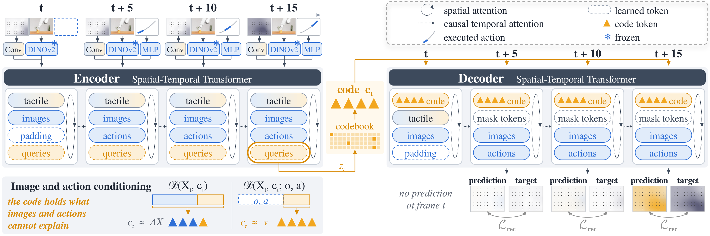
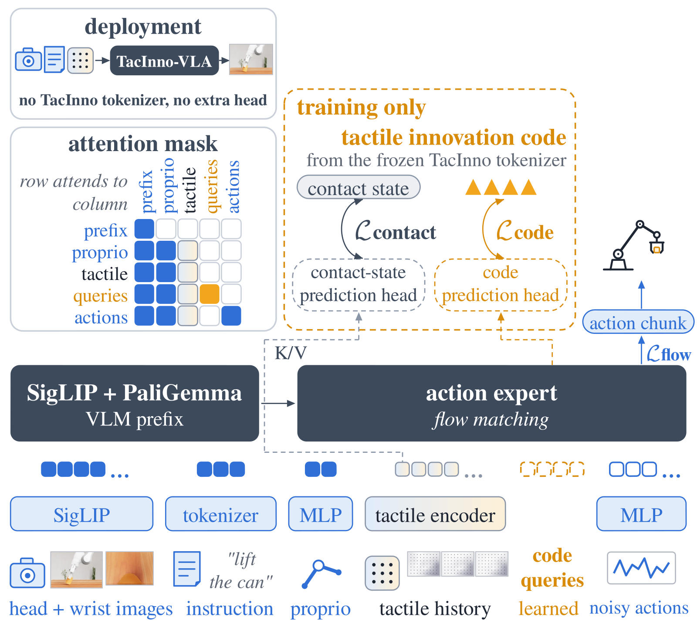
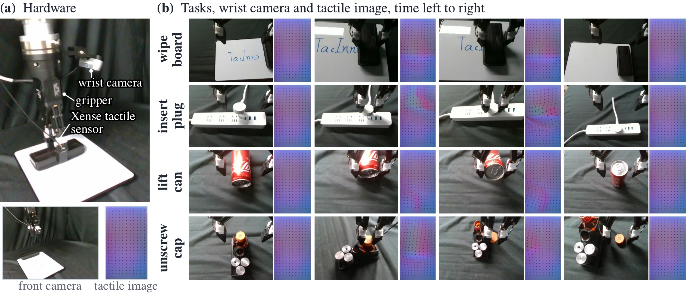

Abstract
Vision-Language-Action (VLA) models have recently been equipped with tactile sensing to perceive visually subtle contact events in contact-rich manipulation. However, adding tactile input yields inconsistent gains, and some visuo-tactile VLA models rely little on tactile input, because much of the tactile change, such as the gel deformation during gripper closure, is predictable from visual observations and executed actions. To address this problem, we introduce TacInno, which isolates the contact dynamics that vision and executed actions cannot explain, termed tactile innovation, and uses tactile innovation only as a training target. Specifically, the TacInno tokenizer, conditioned on visual observations and executed actions, compresses the future tactile change into a discrete code, and the policy, TacInno-VLA, learns to predict the code, adding no module for the code at deployment. TacInno-VLA achieves average success rates of 87.5% across six simulation tasks and 70.5% across four real-world tasks, outperforming the strongest visuo-tactile baseline by 10.7 and 9.0 percentage points, respectively. Ablation studies validate the contributions of visual and action conditioning, multi-frame encoding, and auxiliary code prediction. Together, these results demonstrate the effectiveness of tactile innovation as a supervision signal for contact-rich manipulation.
The idea
What can tactile sensing still tell a policy that already sees the scene and knows its own actions?
A tactile sensor measures how the contact responds to the robot's own actions. When the gripper closes, the gel deforms in a way the cameras and the executed actions already predict. What they cannot predict is how the contact responds, such as an object that starts to slip or a plug that jams.
Feeding tactile observations to the policy leaves it to the action loss to find this residual, and predicting all future tactile signals spends most of the supervision on the predictable part. TacInno isolates the residual, borrowing the notion of innovation from estimation theory, and supervises the policy with it.
The can hides its mass and surface friction. Hold it firmly and lift it, then loosen the grip slowly: it turns upright in the fingertips and settles on the table.
- 1Lift, then loosen slowly
- 2Remove the conditioning
- 3Change the can
acontactbliftcstarts to turnduprightereleased
A toy contact model that runs in your browser, not the trained TacInno tokenizer. The predictor receives your actions, sees the gripper, and sees the can once its pose is off by more than 6 degrees or 5 mm. It assumes an average mass and friction.
Subtract what vision and actions explain
The tokenizer gives the visual observations and the executed actions to both its encoder and its decoder, so the code only has to carry what the two conditions cannot explain.
Encode a short window of contact
Transient events such as incipient slip span several control steps. The encoder reads four tactile frames from t to t+15 with causal temporal attention and outputs a 16-bit code.
Use the code only as a training target
The policy predicts the code from current observations through four code queries that no other token attends to. The tokenizer and both auxiliary heads are removed at deployment.
Method
TacInno tokenizer
The encoder and the decoder are spatial-temporal Transformers whose frames hold tactile tokens, frozen DINOv2 image features, and executed actions. The encoder compresses the tactile observations of the window into four code tokens with 16 values each. The decoder reconstructs the future tactile change from the current tactile observation and the code. Because the decoder already receives the images and the actions, information about the tactile innovation reaches it only through the code.

TacInno-VLA
TacInno-VLA is built on the pretrained VLA π0.5. Proprioceptive tokens, 60 tactile tokens from the three most recent tactile observations, and four learnable code queries are inserted into the action expert. A block-wise attention mask lets the code queries read the prefix, proprioceptive, and tactile tokens, while no other token reads the code queries. The code prediction loss therefore shapes the tactile representations that action prediction uses, rather than handing the code to the actions.
A contact-state head on the tactile encoder predicts contact properties such as contact area, shear, and indentation depth. At deployment the model is π0.5 with a 60-token tactile branch. No tactile pretraining is used.

Results
Six contact-rich tasks in UniVTAC
All policies are trained on the same 50 demonstrations per task and evaluated on the same 100 seeds per task. TacInno-VLA requires no tactile pretraining, whereas FTP-1 and N0-VTLA start from policies pretrained on external visuo-tactile data.
| Method | Tactile | Insert Hole | Insert Tube | Lift Bottle | Lift Can | Pull-out Key | Put Bottle | Avg. |
|---|---|---|---|---|---|---|---|---|
| UniVTAC-ACT | input | 46 | 55 | 49 | 27 | 41 | 25 | 40.5 |
| π0.5 | none | 88 | 70 | 26 | 25 | 36 | 40 | 47.5 |
| FTP-π0.5 | input | 77 | 99 | 45 | 33 | 19 | 88 | 60.2 |
| FTP-1 | input | 63 | 99 | 61 | 94 | 40 | 88 | 74.2 |
| N0-VTLA | input | 99 | 90 | 24 | 81 | 77 | 81 | 75.3 |
| SimpleTouch | input + predict | 94 | 93 | 82 | 65 | 54 | 73 | 76.8 |
| TacInno-VLA (ours) | input + innovation target | 95 | 95 | 78 | 88 | 94 | 75 | 87.5 |
Closed-loop success rates (%). Bold and underlined values denote the best and second-best results.
Closed-loop rollouts of TacInno-VLA
Each clip shows the head camera and the two tactile sensors, played at 2× speed.
Analysis
Does the policy use tactile input?
A higher success rate does not by itself show that a policy relies on tactile input. In the tactile-off test, the tactile input is replaced with a fixed no-contact frame at test time while all other inputs stay unchanged. On Lift Can, where the can must be held firmly enough to lift yet loosely enough to rotate in the grasp, TacInno-VLA drops from 88% to 0%. It reaches the can but does not lift it. The baselines retain most of their success rates.
| Policy | With tactile input | Tactile-off | Change |
|---|---|---|---|
| N0-VTLA | 81 | 77 | −4 |
| FTP-1 | 94 | 80 | −14 |
| SimpleTouch | 65 | 55 | −10 |
| UniVTAC-ACT | 27 | 24 | −3 |
| TacInno-VLA (ours) | 88 | 0 | −88 |
Lift Can, success rates (%) on the same 100 seeds.
Where does tactile innovation occur?

Ablation study
Each variant removes or alters one design of TacInno-VLA on the two lifting tasks. Removing the conditioning, so that the code encodes the entire future tactile change, lowers the average success rate by 21 points. Conditioning on vision alone, encoding only two frames, or letting the actions read the code queries also lowers it.
| Variant | Lift Can | Lift Bottle | Avg. |
|---|---|---|---|
| TacInno-VLA (ours) | 88 | 78 | 83.0 |
| w/o conditioning | 63 | 61 | 62.0 |
| vision-only conditioning | 62 | 77 | 69.5 |
| two-frame code | 81 | 72 | 76.5 |
| w/o attention mask | 66 | 70 | 68.0 |
| w/o code loss | 84 | 68 | 76.0 |
Lift Can and Lift Bottle, success rates (%) on 100 seeds per task.
Real world
Four contact-rich tasks on a Franka FR3
Wiping a board, inserting a plug into a power strip, lifting a lying can upright, and unscrewing a bottle cap, with a vision-based tactile sensor on the fingertip. Every policy is trained on the same 45 teleoperated demonstrations per task and evaluated for 50 trials per task. The code prediction loss improves every task by 16 to 26 percentage points.
Closed-loop rollouts of TacInno-VLA
Recorded with an external camera, played at 4× speed.
| Policy | Wipe Board | Insert Plug | Lift Can | Unscrew Cap | Avg. |
|---|---|---|---|---|---|
| FTP-1 | 88 | 16 | 66 | 64 | 58.5 |
| SimpleTouch | 82 | 28 | 62 | 74 | 61.5 |
| TacInno-VLA, tactile-off | 52 | 10 | 46 | 52 | 40.0 |
| w/o code loss | 62 | 22 | 50 | 56 | 47.5 |
| w/o tactile input | 62 | 14 | 52 | 78 | 51.5 |
| TacInno-VLA (ours) | 88 | 38 | 74 | 82 | 70.5 |
Success rates (%) over 50 trials per task.

Citation
BibTeX
@article{li2026tacinno,
title = {TacInno: Teaching Vision-Language-Action Models the
Contact Dynamics Beyond Vision and Action},
author = {Li, Weile and Lou, Yunfan and Shi, Muqing and Zhang, Zihao and Huang, Zhenbiao and Yao, Boxian and Zhu, Xiyu and Pang, Zhibo},
journal = {arXiv preprint arXiv:2611.26405},
year = {2026}
}